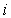
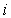

提出期限：1月8日正午
解答上の注意
・特に指定のないかぎり，テキストと同様の記号を用いること。また，時点の取り方もテキストと同様にすること。
・解答だけでなく，その計算過程や考え方も示すこと。
・解答には下線を引くなどわかりやすく示すこと。
１． 開発時点Tよりも1期前のT－1期の期首に手付け金として開発費用Kの一部αK（0<α<1）を手持ち資金で支払わなくてはならない状況を考える。開発費用の残金（1－α）Kは借入れによってまかない，T期以降無限期間にわたって返済していくものとする。また，土地は，当初は遊休地で，土地からの収益はゼロであり，開発後のt期の不動産収入はRt，割引率はiで表す。
① 最適な開発時点Tで成立しなければならない条件を求めよ。（テキストp．74の（4.3）式に相当する条件を示せ。）
② ①の結果を解釈し，テキストの（4.3）式で表されるケースと比べ，開発時点がどのように変わるかを述べよ。
２． 当初は遊休地で土地からの収益はゼロであるが，開発を行うと，2期までは毎期80万円，3期以降は毎期110万円の不動産収入Rtが得られる土地を考える（万円， 110万円）。割引率が5%，開発費用K=2000万円として以下の問いに答えよ。
110万円）。割引率が5%，開発費用K=2000万円として以下の問いに答えよ。
① 最適な開発時点Tと1期の期首での地価を求めよ。
② 10%の地価税が課されたときの最適な開発時点Tと1期の期首での地価を求めよ。
③ 10%の固定資産税が課されたときの最適な開発時点Tと1期の期首での地価を求めよ。
④ 開発費用が2000万円の上記のプロジェクトに加えて，開発費用が4000万円だが，10期までは毎期160万円，11期からは毎期220万円の不動産収入を得られるプロジェクトがあるとしよう。どちらのプロジェクトが選択されるか。
⑤ ④で，10%の地価税が課されたときには，どちらのプロジェクトが選択されるか。
３． 住宅の賃貸価格をR，住宅の資産価格をV，名目利子率をi，名目住宅価格上昇率をg，所得税率を ，譲渡所得税率をとする。また，維持費用の資産価格に対する比率をmとし，固定資産税，減価償却は無視できる（ゼロである）とする。借家については，金利の全額と維持費用の50%を所得税の課税所得から控除でき，持家については，住宅の維持費用の全額を所得税の課税所得から控除できるようになった場合を考え，以下の問いに答えよ。
，譲渡所得税率をとする。また，維持費用の資産価格に対する比率をmとし，固定資産税，減価償却は無視できる（ゼロである）とする。借家については，金利の全額と維持費用の50%を所得税の課税所得から控除でき，持家については，住宅の維持費用の全額を所得税の課税所得から控除できるようになった場合を考え，以下の問いに答えよ。
① 住宅の建設費用の全額をローンでまかなったときの，借家と持家の資本コストを求めよ。
② 実質利子率と実質住宅価格上昇率は一定であるが，物価上昇率は変化し，名目利子率と名目住宅価格上昇率がそれぞれ，，で表されるとき，物価上昇率が1%上がると，①で求めた資本コストはそれぞれ何%上昇（あるいは下降）するか。
４． アメリカでは，1980年代末から1990年代初めにかけて，住宅建設が劇的に減少したが，空室率はほとんど上昇しなかった。これは，空室率がかなりの上昇をみせた以前の住宅不況とは対照的である。なぜ，この景気後退では，そのようなことが起こったのだろうか。このことを考えるために，ストック・フロー・アプローチを用いて，以下の問いに答えよ。
① 景気後退以前は，住宅市場は均衡していたとしよう。テキスト図5－2，図5－3を参考にしながら，住宅の賃貸価格Rで計った住宅の需要曲線d (R)，資産価格Vで計った住宅の需要曲線D (V)，およびそれぞれの均衡点の座標を書き入れて，以下の図を完成させよ。ただし，均衡における住宅の賃貸価格は，資本コストはであり，また，資産価格に関する図の均衡点は，供給曲線の屈折点Eとなるようにせよ。また，d (R) とD (V) の関係を述べよ。
② ①の状況から出発して，資本コストが変わらず，住宅の（賃貸）需要が減退した場合，住宅の賃貸市場と資産市場ではどのようなことが起こるかを図を用いて分析せよ。
③ ①の状況から出発して，住宅の（賃貸）需要は変わらず，資本コストが上昇した場合，住宅の賃貸市場と資産市場ではどのようなことが起こるかを図を用いて分析せよ。
④ 空室率が上昇するのは，住宅の賃貸価格が速やかに調整されず，そのため不均衡が拡大するからである。したがって，住宅の賃貸価格の調整速度は遅いと考えられる。住宅の賃貸価格の調整速度が以前の不況下と同じであったと仮定し，②，③の分析を踏まえると，アメリカで1980年代末から1990年代初めに起こった住宅不況は主に何が原因だったと考えられるか。